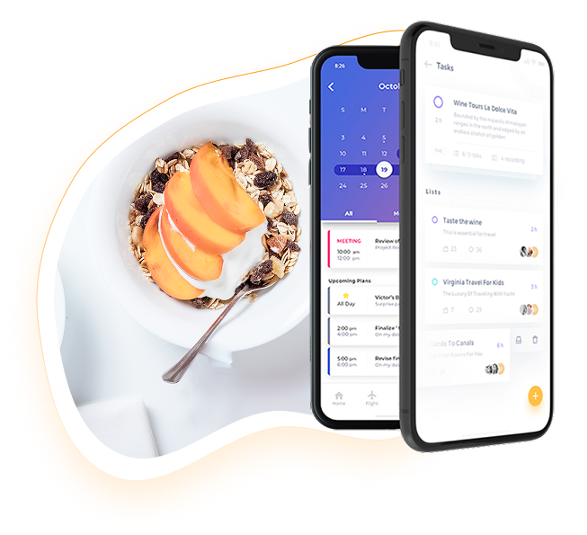
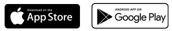
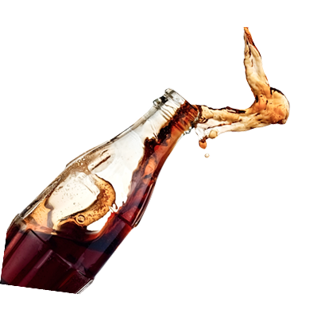
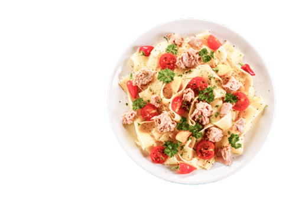

<section class="relative">
  <div
    class="container flex max-md:flex-col-reverse justify-between md:gap-4 gap-8 xl:pb-[9.35rem] md:pb-28 sm:pb-24 pb-20 items-center">
    <div class="md:w-[38.25rem] sm:w-[22rem] w-[85%] max-md:max-w-full aspect-[1.13/1] relative">
      
    </div>
    <div class="lg:w-[27.5rem] md:w-96 w-[30rem] max-md:max-w-full shrink-0 xl:mt-[5rem]">
      <div class="mb-[1.8rem] subtitle">Take away</div>
      <h2 class="sm:mb-[1.2rem] mb-4 text-balance">Simple Way To
        Order Your Food</h2>
      <p class="xl:mb-[2.4rem] mb-9 font-circular-std-medium">Keep healthy food readily available. When you get hungry,
        you’re
        more likely to eat the
        first
        thing
        you see on
        the counter or in the cupboard.</p>
      <a class="max-w-[21.45rem] block xl:ml-[-0.35rem]" href="#"></a>
    </div>

  </div>
  
  
</section>